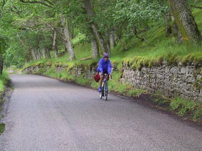

Lots of pics of this day of the tour are here.previous day next dayIt was raining while we ate breakfast. We watched it ease up, then pick up several times while we chewed through our food. At 9:30 as usual we headed out into the rain.
 Greta just after the tea stop We pedalled along until we reached the RSPB (Royal Society for the Protection of Birds) reserve at Loch Garten. This is a special one, as it is the place where in 1954 ospreys were reintroduced to Scotland after having been hunted to extinction. Normally there is a breeding pair, but this year the birds had some initial problems (he wasn't feeding her fish as he should) so they didn't mate. They seem to be getting along better now, so the people have high hopes that next year they will produce young. We could see the nest (a large object on top of a pole) but there were no birds in sight: they were sheltering from the rain. Sensible animals!
We headed on, missed the tea stop Sue and Neil had suggested that we try, and stopped in at a little cafe up the road, where we had lunch. As we left the rain petered out, and soon the sun came out. The rest of the day's riding was straightforward: following a B-road into Kingussie. Simon and I often stopped for pictures, but we still got there in plenty of time to visit the Highland Folk Museum, which told the story of life in the highlands, complete with a replica crofter's house.
The place where was stayed, the Sonnhalde Guest House, was very nice. The guy who ran it, Bernie, was full of enthusiasm and good humor.
Today was a light day at only 33 miles.